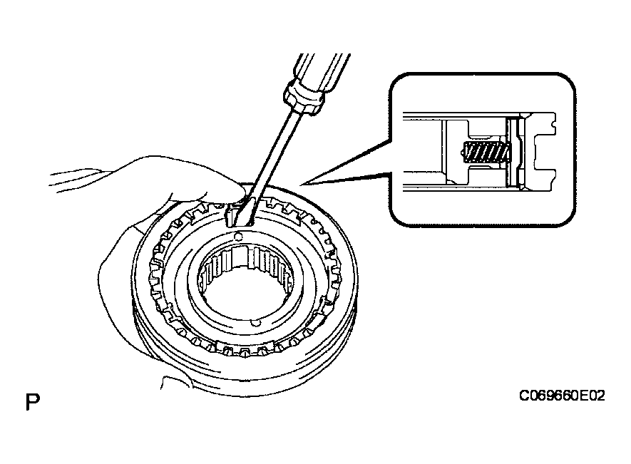
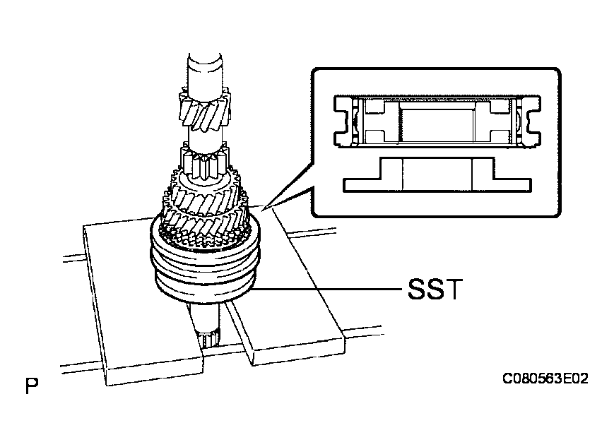
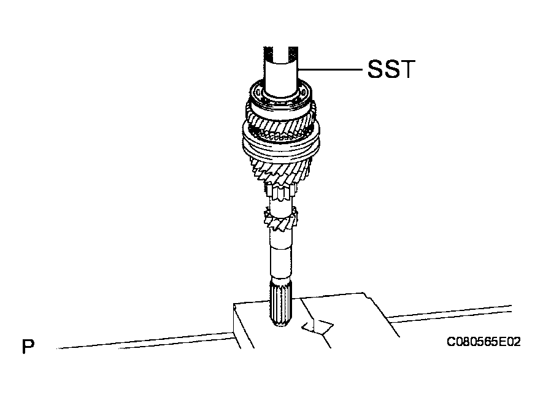
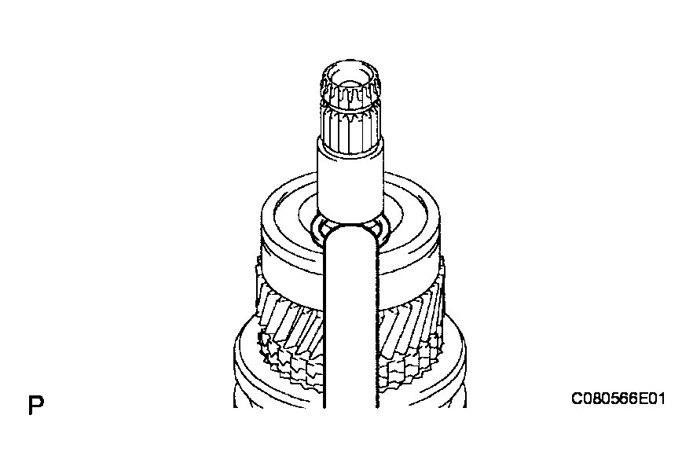

Input Shaft: Reassembly
- INSTALL NO. 2 TRANSMISSION HUB SLEEVE
- Coat the No. 2 transmission hub sleeve with gear oil, and install it to the No. 2 transmission clutch hub.

Courtesy of © TOYOTA, LICENSE AGREEMENT TMS1002NOTE: Be sure to set the No. 2 transmission hub sleeve and No. 2 transmission clutch hub in the correct orientation. - Using a screwdriver, install the 3 synchromesh key springs with 3 No. 2 synchromesh shifting keys to the No. 2 transmission clutch hub.
- Coat the No. 2 transmission hub sleeve with gear oil, and install it to the No. 2 transmission clutch hub.
- INSTALL 3RD GEAR NEEDLE ROLLER BEARING
- Coat the 3rd gear needle roller bearing with gear oil, and install it to the input shaft.
- INSTALL 3RD GEAR
- Coat the 3rd gear with gear oil, and install it to the input shaft.
- INSTALL NO. 2 SYNCHRONIZER RING (for 3rd Gear)
- Coat the No. 2 synchronizer ring with gear oil, and install it to the 3rd gear.
- INSTALL NO. 2 TRANSMISSION CLUTCH HUB
- Using SST and a press, press in the No. 2 transmission clutch hub to the input shaft.

Courtesy of © TOYOTA, LICENSE AGREEMENT TMS1002SST 09316-60011 (09316-00021)
NOTE: Fit the synchromesh shifting key into the groove of the synchronizer ring correctly. - Select a snap ring that will allow minimum axial play.
Standard clearance: 0.1 mm (0.004 in.) or less
Standard snap ring thickness
SNAP RING THICKNESS SPECIFICATIONMark Thickness mm (in) 0 2.30 (0.0906) 1 2.36 (0.0929) 2 2.42 (0.0953) 3 2.48 (0.0976) 4 2.54 (0.1000) 5 2.60 (0.1024) - Using a brass bar and hammer, and tap in the snap ring to the input shaft.
- Using SST and a press, press in the No. 2 transmission clutch hub to the input shaft.
- INSTALL NO. 2 SYNCHRONIZER RING (for 4th Gear)
- Coat the No. 2 synchronizer ring with gear oil, and install it to the No. 2 transmission clutch hub.
- INSTALL 4TH GEAR NEEDLE ROLLER BEARING
- Coat the 4th gear needle roller bearing and 4th gear bearing spacer with gear oil, and install them to the No. 2 transmission clutch hub.
- INSTALL 4TH GEAR
- Coat the 4th gear with gear oil, and install it to the input shaft.
- INSTALL REAR INPUT SHAFT BEARING SHAFT SNAP RING
- Using SST and a press, press in the radial ball bearing to the input shaft.

Courtesy of © TOYOTA, LICENSE AGREEMENT TMS1002SST 09608-04031
- Select a snap ring that will allow minimum axial play.
Standard clearance: 0.1 mm (0.004 in.) or less
Standard snap ring thickness
SNAP RING THICKNESS SPECIFICATIONMark Thickness (in) A 2.29 (0.0901) B 2.35 (0.0925) C 2.41 (0.0948) D 2.47 (0.0972) E 2.53 (0.0996) F 2.59 (0.1019) - Using a brass bar and hammer, and tap in the snap ring to the input shaft.

Courtesy of © TOYOTA, LICENSE AGREEMENT TMS1002NOTE: Take care not to damage the journal surface of the snap ring.
- Using SST and a press, press in the radial ball bearing to the input shaft.
- INSPECT 3RD GEAR RADIAL CLEARANCE
- Using a dial indicator, measure the radial clearance.
Standard clearance
GEAR RADIAL CLEARANCE REFERENCEItem Specified Condition KOYO made 0.015 to 0.058 mm (0.0006 to 0.0023 in.) NSK made 0.015 to 0.056 mm (0.0006 to 0.0022 in.) If the clearance is not within the specification, replace the gear, needle roller bearing or shaft.
- Using a dial indicator, measure the radial clearance.
- INSPECT 4TH GEAR RADIAL CLEARANCE
- Using a dial indicator, measure the radial clearance.
Standard clearance
GEAR RADIAL CLEARANCE REFERENCEItem Specified Condition KOYO made 0.009 to 0.050 mm (0.0004 to 0.0020 in.) NSK made 0.009 to 0.050 mm (0.0004 to 0.0020 in.) If the clearance is not within the specification, replace the gear, needle roller bearing or shaft.
- Using a dial indicator, measure the radial clearance.
- INSPECT 3RD GEAR THRUST CLEARANCE
- Using a dial indicator, measure the thrust clearance.
Standard clearance: 0.1 to 0.35 mm (0.0039 to 0.0138 in.)
If the clearance is not within the specification, replace the gear, No. 2 synchronizer ring or No. 2 transmission clutch hub.
- Using a dial indicator, measure the thrust clearance.
- INSPECT 4TH GEAR THRUST CLEARANCE
- Using a feeler gauge, measure the thrust clearance.
Standard clearance: 0.1 to 0.55 mm (0.0039 to 0.0217 in.)
If the clearance is not within the specification, replace the gear or input shaft rear radial ball bearing.
- Using a feeler gauge, measure the thrust clearance.